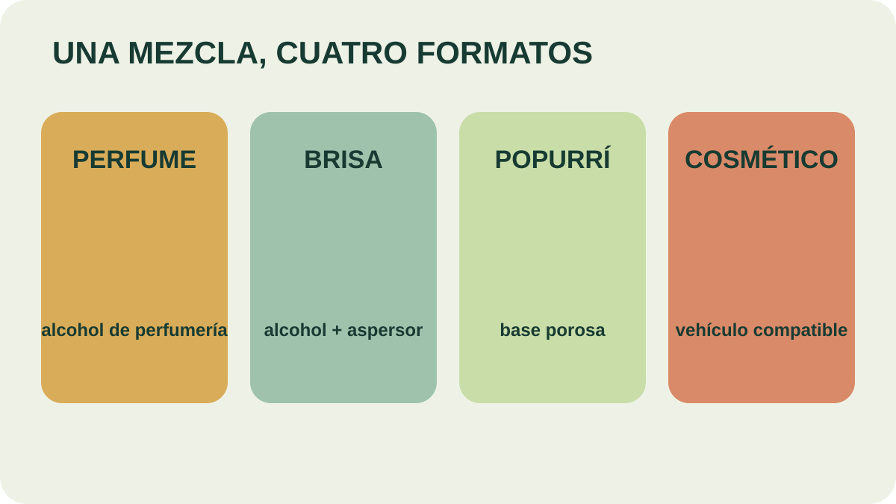

Módulo 26 · 25 minutos
Preparaciones cosméticas y ambientales
Al terminar, vas a poder formular una preparación cosmética o ambiental con vehículo, proporción y uso definidos.
Una mezcla, cuatro destinos
Tres aceites pueden formar una fragancia coherente y terminar en productos completamente distintos. En alcohol de perfumería se vuelven perfume; con aspersor, una brisa; sobre una base porosa, un popurrí; en un vehículo cosmético, una preparación de contacto. El formato decide la proporción y las precauciones.
Ambiente: dispersar sin perder la cuenta
Los difusores y atomizadores forman una nube de partículas que distribuye la fragancia en una habitación. En un popurrí se usa una base de madera, aserrín, frutas secas, piedras porosas o cerámica. Hasta 10 gotas se mezclan en 30 ml de alcohol y luego se rocían sobre esa base.
Las admiten hasta 50 gotas en 100 ml de alcohol de 96°, sin agua. Deben probarse con cuidado sobre superficies: algunos aceites pueden disolver el barniz de los muebles.
Para un perfume, el material indica 10 gotas en 100 ml de . La fórmula aromática puede tener notas altas, medias y base, pero el total debe respetar la proporción del formato.

Encontrá el dato que cambia
Compará los cuatro formatos. ¿Cuál utiliza una base porosa? ¿Cuál usa alcohol de perfumería? ¿Cuál exige comprobar compatibilidad con superficies barnizadas?
Contacto cosmético: primero dispersar
Para baños zonales o totales, el material recuerda que el aceite no se disuelve en agua. Puede dispersarse previamente en leche, vinagre, jabón líquido, miel o sal de mar, utilizando 2 a 4 gotas por cada 20 ml o gramos de vehículo.
El cuidado de manos y uñas ofrece un modelo completo de formulación: limpieza con jabón suave, utensilios limpios y una base de almendras o crema sin olor. El material combina una cucharadita de base, vitamina E y una mezcla aromática. La preparación se aplica sobre uñas y cutículas mediante un masaje cuidadoso.
Más importante que repetir una receta es leer su estructura: base cosmética, cantidad aromática, forma de aplicación y advertencias. Esa lógica puede trasladarse a geles, pomadas, jabones o sales, siempre que cada producto sea evaluado dentro de su propio formato.
Una ficha antes del frasco
Toda formulación debe indicar nombre, destino, vehículo, volumen final, aceites y cantidad de gotas, modo de uso, fecha y precauciones. Sin esos datos, no puede repetirse ni revisarse.
El no es un detalle secundario: define compatibilidad, textura y concentración. Un perfume y una brisa pueden compartir alcohol, pero no necesariamente cantidad ni superficie de uso.
Actividad · Una fórmula completa
Elegí perfume, brisa, popurrí o cuidado cosmético de manos. Escribí nombre, tres aceites con su nota, vehículo, volumen, total de gotas, procedimiento, forma de aplicación y dos advertencias. Verificá que la suma de gotas respete la proporción del formato elegido.
El formato llega a una persona
Cuando la preparación implica contacto, la técnica de aplicación importa tanto como la fórmula. El masaje comienza con un deslizamiento y exige reconocer cuándo detenerse.
Guardá esta estación
Cuando puedas explicar la idea central con tus propias palabras, marcá el módulo como completado.